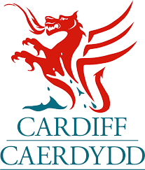

Cardiff Council
EcoRider is an Android app developed in collaboration with Cardiff Council, aimed at reducing carbon emissions and improving traffic flow in Cardiff. The app highlights the comparisons between driving and cycling on various traffic routes, using a traffic light color-coding system to provide clear visual cues.
By promoting sustainable transportation options, EcoRider helps users make informed decisions that benefit both the environment and their daily commute. This project not only supports the fight against climate change but also contributes to enhanced traffic management in the city.